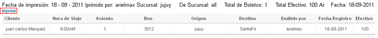
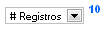
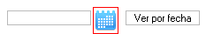
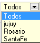
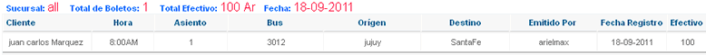

Ayuda Informe de Ventas Boletos
Contenido:
- Vista General
- Barra de Menús
- Barra de Información Usuario
- Barra de Herramientas
- Paginación
- Selección Por Fecha
- Filtro
- Registro de venta
Vista General

Barra de Menús

La barra de menús nos permite tener un acceso direccto un sector del sistema, permite una mejor navegación por el sistema.
La barra de menús varia en base al tipo de usuario logeado (niveles), si ingresa el super admin tendra mayores opciones en la barra de menús, adiferencia de un usuario de nivel bajo solo vera la barra de menús relacionado con el cargo que este ocupa.
Barra de Información Usuario

La barra de información usuario nos muestra la información del usuario Logeado, también nos permite tener acceso directo a mensajesprovenientes de otros usuarios del sistema, podemos finalizar la aplicación de forma segura haciendo clic en Finalizar.
Barra de Herramientas
Esta el la barra de herramientas del informe económico boletos, cada botón nos permite ejecutar una acción en concreto, a continuación explicamos el funcionamiento de cada botón.
 Actualizar
Actualizar
Este botón nos permite actualizar la lista de registros de venta de boletos.
Imprimir
Este botón nos permite imprimir los registros de venta correspondientes a la fecha colocada en el calendario, si no se utilizo esta opción imprimira los registros correspondientes a la fecha actual.
Al precionar el botón se abrira una ventana con todos los registor listos para imprimir.
Para imprimir hacemos clic en Imprimir.
Paginación
Esta opción nos permite seleccionar de la lista desplegable el número de resgistros o ventas a mostrar por página. el número al lado nos indica el número de registros actuales a mostrar.
Selección Por Fecha
Esta opción nos permite mostrar registros por fecha, o un rango de fechas, al hacer clic en el calendario podemos seleccionar una fecha anterior a la que nos encontramos, precionamos Visualizar, el sistema listara los registros de la fecha / fechas colocada.
Filtro
Esta opción nos permite filtrar por terminal mostrandonos los informes económicos de la terminal seleccionada, esta opción solo lo puede utilizar el super administrador otro usuario del sistema no podra visualizarlo.
Registro de Venta
El registro de venta es un lista que nos permite ver todas las ventas correspondientes al día o a la fecha seleccionada, tambien permite visualizar datos de importes , número de boletos vendidos, total de dinero acumulado.